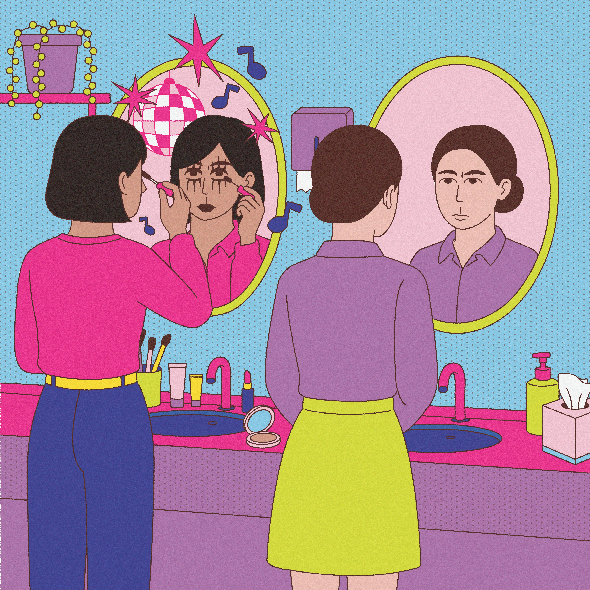

Turn off
the
switch
거울을 우연히 봤는데 눈 밑이 팬더처럼 까맣게 번져 있는 걸 발견한 상황, 오늘 하루 종일 만난 모든 사람들이 내 얼굴만 보고 속으로 웃고 있었을 것만 같은 상황이다. 근데 과연 진짜 그럴까?


거울을 우연히 봤는데 눈 밑이 팬더처럼 까맣게 번져 있는 걸 발견한 상황, 오늘 하루 종일 만난 모든 사람들이 내 얼굴만 보고 속으로 웃고 있었을 것만 같은 상황이다. 근데 과연 진짜 그럴까?